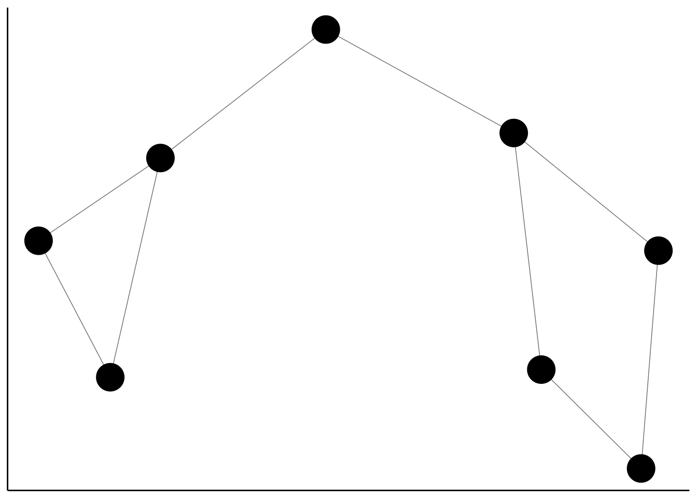
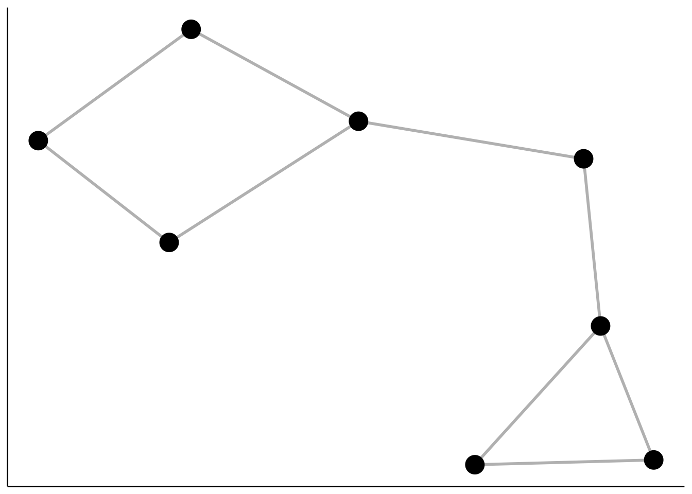
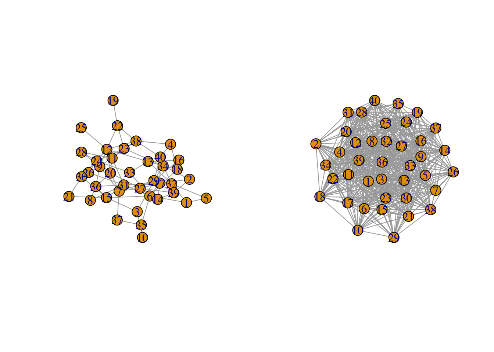

Chapitre 2 Modèles et construction de graphes
2.1 Modèles de graphe
Nous proposons dans cette partie de générer des graphes selon différents modèles de graphes aléatoires présentés en cours.
2.1.1 Graphe d’Erdos-Renyi
La fonction sample_gnp du package igraph permet de simuler un graphe d’Erdos-Renyi. On donne comme paramètres
- \(n\) le nombre de nœuds
- \(p\) la probabilité de connexion entre deux nœuds.
On simule 2 graphes différents : un avec peu de connexions, et un autre très connecté.
set.seed(1)
n <- 40
p1 <- 0.1
p2 <- 0.7
G1 <- sample_gnp(n,p1)
G2 <- sample_gnp(n,p2)
par(mfrow=c(1,2))
plot(G1)
plot(G2)
On rappelle que dans un graphe d’Erdos-Renyi la distribution du degrés du nœud \(i\) est binomiale : \(\mathcal B(n-1,p)\).
A l’aide d’un diagramme en barre, comparer les distributions empiriques des degrés des noeuds (on pourra utiliser degree.distribution) à leur distribution théorique binomiale (dbinom) pour les deux graphes précédents.
M1 <- max(degree(G1))
deg1 <- data.frame(degre=0:M1,emp=degree.distribution(G1),theo=dbinom(0:M1,n-1,p1)) %>%
gather(key="Distribution",value="valeur",-degre)
M2 <- max(degree(G2))
deg2 <- data.frame(degre=0:M2,emp=degree.distribution(G2),theo=dbinom(0:M2,n-1,p2)) %>%
gather(key="Distribution",value="valeur",-degre)
deg <- bind_rows(G1=deg1,G2=deg2,.id="graphe")
ggplot(deg)+aes(x=degre,y=valeur,fill=Distribution)+
geom_bar(stat="identity",position = "dodge",width=0.5)+facet_wrap(~graphe,scales="free")+
theme_classic()
On considère le graphe sur les misérables où une interaction entre deux personnages est définie par la co-occurrence des ces deux personnages dans un même chapitre.
Visualiser la distribution des degrés de ce graphe.
deg.mis <- data.frame(deg=0:max(degree(miserab)),dist=degree.distribution(miserab)) ggplot(deg.mis)+aes(x=deg,y=dist)+geom_bar(stat = "identity")+theme_classic()
On souhaite comparer cette distribution à celle d’un graphe d’Erdos-Renyi. Proposer un moyen d’estimer les paramètres (\(n\) et \(p\)).
Pour \(n\), il suffit de prendre le nombre de noeuds. Pour \(p\), le nombre d’arêtes observés divisé par le nombre d’arêtes possibles (\(C_n^2\)).
Comparer la distribution empirique du graphe à celle théorique.
deg.mis1 <- deg.mis %>% mutate(emp=dist,theo=dbinom(0:max(deg),nhat-1,phat)) %>% select(-dist) %>% gather(key="dist",value="valeur",-deg) ggplot(deg.mis1)+aes(x=deg,y=valeur,fill=dist)+ geom_bar(stat="identity",position = "dodge",width=0.5)On observe que les deux distributions n’ont rien avoir l’une avec l’autre. L’hypothèse que le graphe observé est une réalisation d’un G(n,p) semble peu réaliste.
2.1.2 Modèles à blocs stochastiques
La fonction sample_sbm du package igraph permet de simuler un graphe SBM.
n <- 40 # nombre de noeuds
Q <- 3 # nombre de clusters
pi <- c(0.5, 0.3, 0.2) # appartenance aux groupes
effectifs <- n*pi
connectivite_matrix <- matrix(c(0.9, 0.1, 0.04,
0.1,0.7, 0.05,
0.04, 0.05, 0.95),nrow=Q) # matrice de connexion inter/intra groupes
G <- sample_sbm(n, pref.matrix=connectivite_matrix, block.sizes = effectifs)
plot(G)
On visualise qu’il s’agit bien d’un graphe avec trois communautés ou groupes, ce qui est dû aux fortes probabilités sur la diagonale de la matrice de connectivité et aux faibles valeurs de connectivité en dehors la diagonale.
On considère le graphe \(G\) construit précédemment.
Calculer la matrice d’adjacence du graphe. On pourra utiliser as_adj.
Les commandes suivantes permettent d’estimer les paramètres d’un graphe SBM
library("blockmodels") mysbm <- BM_bernoulli('SBM_sym',A,verbosity=0) # SBM_sym = non dirigé mysbm$estimate()


 Que pouvez-vous dire à propos du nombre de groupes ?
Que pouvez-vous dire à propos du nombre de groupes ?Le dernier graphe propose la valeur de l’ICL en fonction du nombre de clusters. On choisira donc 3 groupes.
À l’aide des sorties présentes dans mysbm$model_parameters, récupérer l’estimation de la matrice de connectivité. Comparer aux vraies valeurs.
On trouve dans mysbm$memberships[[3]]$Z les estimations des probabilités a posteriori d’être dans chaque cluster. Déduire de cette matrice un groupe pour chaque observation.
prob.post <- mysbm$memberships[[3]]$Z head(prob.post) [,1] [,2] [,3] [1,] 0.002493766 0.9950125 0.002493766 [2,] 0.002493766 0.9950125 0.002493766 [3,] 0.002493766 0.9950125 0.002493766 [4,] 0.002493766 0.9950125 0.002493766 [5,] 0.002493766 0.9950125 0.002493766 [6,] 0.002493766 0.9950125 0.002493766Visualiser les clusters sur le graphe.

A l’aide d’un modèle SBM, identifier des clusters ou communautés sur le graphe karate.
sbm.kar <- BM_bernoulli('SBM_sym',A,verbosity=0,explore_min=8) # SBM_sym = non dirigé
sbm.kar$estimate()


On choisit 2 groupes :
On estime les probabilités d’appartenance à chaque groupe :
prob.post <- sbm.kar$memberships[[2]]$Z
head(prob.post)
[,1] [,2]
[1,] 0.002941176 0.997058824
[2,] 0.002941176 0.997058824
[3,] 0.002941176 0.997058824
[4,] 0.997058824 0.002941176
[5,] 0.997058824 0.002941176
[6,] 0.997058824 0.002941176pour en déduire un groupe pour chaque nœud
clust.kar <- apply(prob.post,1,which.max) # maximum a posteriori
clust.kar
[1] 2 2 2 1 1 1 1 1 1 1 1 1 1 1 1 1 1 1 1 1 1 1 1 1 1 1 1 1
[29] 1 1 1 1 2 2que l’on visualise enfin :

La classification n’a pas l’air d’être pertinente, on identifie un tout petit groupe de personnes très connectées. On peut essayer avec plus de groupes, par exemple 4 :
prob.post <- sbm.kar$memberships[[4]]$Z
head(prob.post)
[,1] [,2] [,3] [,4]
[1,] 0.002923977 0.002923977 0.991228070 0.002923977
[2,] 0.002923977 0.002923977 0.991228070 0.002923977
[3,] 0.002923977 0.002923977 0.991228070 0.002923977
[4,] 0.002923977 0.990729613 0.003422433 0.002923977
[5,] 0.002923977 0.991228070 0.002923977 0.002923977
[6,] 0.002923977 0.991228070 0.002923977 0.002923977clust.kar <- apply(prob.post,1,which.max) # maximum a posteriori
clust.kar
[1] 3 3 3 2 2 2 2 2 4 4 2 2 2 2 4 4 2 2 4 2 4 2 4 4 4 4 4 4
[29] 4 4 4 4 1 1
Ça a l’air mieux !
2.2 Construire un graphe à partir de données “classiques”
Dans de nombreuses applications on ne dispose pas du graphe, l’utilisateur doit le construire à partir d’un jeu de données standard individus-variabes Les méthodes classiques consistent à calculer des distances entre les individus et à mettre une arrête lorsque des individus sont “proches”. La notion de proximité est bien entendu à définir, il existe plusieurs possibilités :
- \(\varepsilon\)-neighborhood graph : on met une arête entre \(i\) et \(j\) si la distance entre \(i\) et \(j\) est plus petite qu’un seuil \(\varepsilon\) ;
- plus proches voisins : on met une arête entre \(i\) et \(j\) si \(i\) est parmi les plus proches voisins de \(j\).
On reprend le jeu de données iris vu en cours, dont on extrait un sous échantillon.
data(iris)
set.seed(12345)
donnees <- iris[sample(nrow(iris),30),]
head(donnees)
Sepal.Length Sepal.Width Petal.Length Petal.Width
142 6.9 3.1 5.1 2.3
51 7.0 3.2 4.7 1.4
58 4.9 2.4 3.3 1.0
93 5.8 2.6 4.0 1.2
75 6.4 2.9 4.3 1.3
96 5.7 3.0 4.2 1.2
Species
142 virginica
51 versicolor
58 versicolor
93 versicolor
75 versicolor
96 versicolorConstruire les distances euclidiennes entre individus en ne considèrant que les 4 variables quantitatives. On stockera ces distances dans une matrice et on visualisera cette matrice à l’aide d’un heatmap.
A l’aide de la fonction nng du package
cccd, construire :- un graphe de plus proches voisins à 20 ppv
- un graphe de plus proches voisins à 2 ppv
- un graphe de plus proches mutuels voisins à 20 ppv
- un graphe de plus proches mutuels voisins à 2 ppv
Ces 4 graphes seront non dirigés.
Comparer les nombres d’arêtes de chaque graphe.
On remarque que :
-
le nombre d’arêtes augmente lorsqu’on augmente le nombre de voisins (normal).
-
les ppv mutuels ont moins d’arêtes (normal aussi, ce critère est plus exigeant pour définir une arête).
-
On considère maintenant le graphe de ppv (non mutuels) à 10 ppv. Ajuster un modèle SBM à 3 groupes sur ce graphe. Comparer les groupes obtenus aux espèces d’iris.
On commence par construire le graphe
Puis on ajuste le modèle SBM :
A <- as_adj(G10, sparse=F) sbm.iris <- BM_bernoulli('SBM_sym',A,verbosity=0,explore_min=8,plotting="") # SBM_sym = non dirigé sbm.iris$estimate()L’ICL est maximum pour 4 groupes
mais on en choisit 3 comme indiqué :
prob.post <- sbm.iris$memberships[[3]]$Z head(prob.post) [,1] [,2] [,3] [1,] 0.993355482 0.003322259 0.003322259 [2,] 0.993355482 0.003322259 0.003322259 [3,] 0.003322259 0.993355482 0.003322259 [4,] 0.003322259 0.993355482 0.003322259 [5,] 0.987674040 0.009003701 0.003322259 [6,] 0.003322259 0.993355482 0.003322259clust.iris <- apply(prob.post,1,which.max) # maximum a posteriori clust.iris [1] 1 1 2 2 1 2 3 1 1 3 1 2 3 3 1 3 3 2 3 3 3 1 1 3 2 2 1 2 [29] 1 2 table(clust.iris,donnees$Species) clust.iris setosa versicolor virginica 1 0 3 8 2 0 9 0 3 10 0 0On remarque que, à 3 exceptions près, les clusters correspondent aux espèces. On peut ainsi visualiser les groupes

et les 3 nœuds “mal classés” :
df <- tibble(clust=clust.iris,Species=donnees$Species) %>% mutate(clust1=fct_recode(as.character(clust),virginica="1",versicolor="2", setosa="3"),err=(clust1!=Species)) plot(G10,vertex.color=df$err)